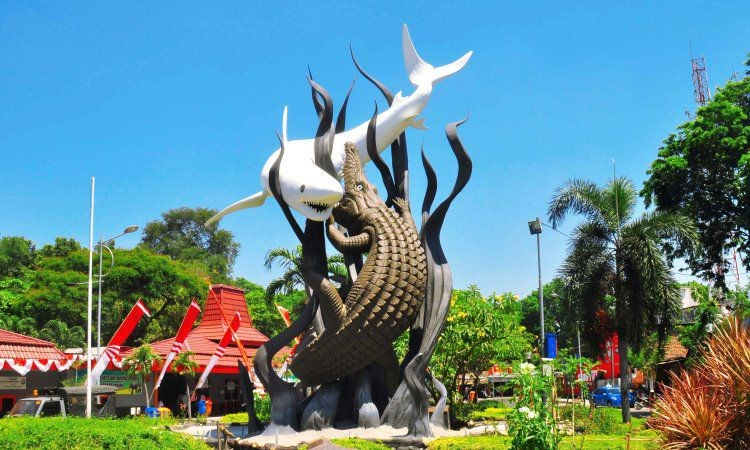

Top Tourist Attractions in Surabaya
Surabaya offers a rich experience for travelers, blending historical landmarks with cultural and modern attractions. Here are some must-visit places when you're exploring the City of Heroes:

Suro and Boyo Statue
A unique statue depicting a shark ('Suro') and a crocodile ('Boyo'), symbolizing the origin of Surabaya. It represents the resilience and fighting spirit of the city.

Heroes Monument (Tugu Pahlawan)
An iconic monument dedicated to the heroes who fought for Indonesia's independence. It stands tall as a symbol of Surabaya's bravery and patriotism.

Kelenteng Sanggar Agung
A stunning Chinese temple located by the sea, known for its intricate statues and architecture. It’s a peaceful place that reflects Surabaya’s cultural diversity.
Find Your Way
Explore these attractions with the help of Google Maps: